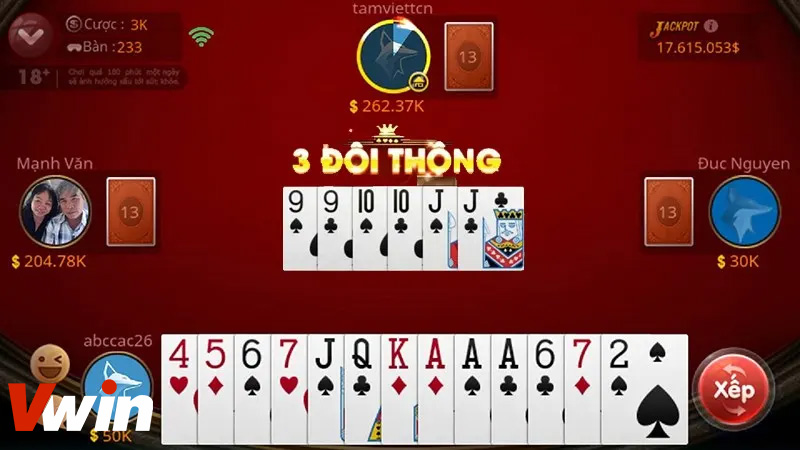

.png)
ĐÃ ĐĂNG TRÊN TRÊN THÁNG BA 4, 2024 BỞI Vwin

Trong hệ thống các trò chơi đánh bài, Tiến Lên Miền Nam nổi lên như một lựa chọn phổ biến của người chơi Việt Nam. So với phiên bản Tiến Lên Miền Bắc, luật chơi của Tiến Lên Miền Nam được xây dựng với sự thoáng đãng và đơn giản hơn, tạo điều kiện cho người chơi dễ dàng tiếp cận và tham gia. Điều này giúp cho trò chơi này trở nên phổ biến rộng rãi ở mọi vùng miền của đất nước. Hãy cùng Vwin khám phá cách chơi Tiến Lên Miền Nam thông qua những chia sẻ dưới đây.
Trò chơi này được xem là một trong những trò chơi bài được ưa chuộng tại Việt Nam, thường sử dụng bộ bài tây 52 lá và có thể tham gia từ 2 đến 4 người chơi.
Khám phá Tiến Lên Miền Nam
Mục tiêu của trò chơi không chỉ đơn thuần là đánh hết bài trước các đối thủ. Nó còn là việc sắp xếp và chiến thắng thông qua sự tư duy chiến lược, khéo léo và kỹ năng đánh bài. Người chơi cần phải nắm vững quy tắc, đọc hiểu tình hình trò chơi và dùng tài năng của mình để đạt được mục tiêu cuối cùng, làm chủ bàn bài và vươn tới chiến thắng.
Để có thể hiểu hơn về cách chơi Tiến lên, người chơi cần tìm hiểu về các thuật ngữ trong tựa game này. Trong game bài này, người chơi sẽ gặp phải nhiều thuật ngữ và cách xếp bài khác nhau, mỗi loại đều có vai trò quan trọng trong cuộc chơi:
Ngoài ra, trong Tiến Lên Miền Nam, còn có những tập hợp đặc biệt như:
Những thuật ngữ và tập hợp này đóng vai trò quan trọng trong cách chơi Tiến Lên và đánh bại đối thủ trong cuộc chơi.
Cách chơi Tiến Lên Miền Nam cơ bản
Tiến Lên là một trò chơi bài phổ biến ở Việt Nam, nhưng đối với những người mới bắt đầu, việc hiểu cách chơi cơ bản là vô cùng quan trọng. Hãy cùng khám phá những nguyên tắc và quy định căn bản của trò chơi này để bạn có thể tham gia một cách tự tin và hiệu quả.
Để chơi Tiến Lên Miền Nam, bạn cần tuân thủ các bước cơ bản sau:
Lưu ý: Trò chơi Tiến Lên Miền Nam có nhiều biến thể và quy tắc khác nhau tùy theo thỏa thuận của người chơi. Tuy nhiên, các quy tắc cơ bản như trên là quan trọng để bạn có thể tham gia vào trò chơi một cách dễ dàng.
Trong trò chơi này, quy định về chặt Heo đóng vai trò quan trọng. “Chặt” được định nghĩa là việc sử dụng các sắp xếp đặc biệt (hay “hàng”) để đánh “heo” hoặc “hàng”. Các nguyên tắc chặt được mô tả như sau:
3 Đôi Thông
Tức là 3 cặp đôi liên tiếp, có thể chặt được bằng cách đánh ra 1 cây 2 hoặc 3 cặp đôi có giá trị nhỏ hơn.
3 Đôi Thông
Ví dụ: Nếu bạn có một sắp xếp bài gồm 9-9-10-10-J-J, đây là một trường hợp của 3 Đôi Thông vì bạn có ba cặp đôi liên tiếp (9-9, 10-10, J-J). Bạn có thể chặt bằng cách đánh ra một cây 2 hoặc bất kỳ ba cặp đôi nào có giá trị nhỏ hơn, chẳng hạn như 3-3-4-4-5-5.
Tứ Quý
Là bốn lá bài có cùng một con số, có thể chặt được bằng cách đánh ra ba cặp đôi liên tiếp hoặc một con Hai (Heo).
Giả sử bạn có một sắp xếp bài gồm 9-9-9-9-J-J-J-J, đây là một trường hợp của Tứ Quý vì bạn có bốn lá bài cùng một con số (9). Bạn có thể chặt bằng cách đánh ra ba cặp đôi liên tiếp như 6-6-7-7-8-8 hoặc một con Hai (Heo).
4 Đôi Thông
Được hiểu là bốn cặp đôi liên tiếp, có thể chặt được bằng cách đánh ra Tứ Quý, ba cặp đôi liên tiếp, một con Hai (Heo), hoặc một đôi Hai (Heo).
Nếu bạn có một sắp xếp bài gồm 5-5-6-6-7-7-8-8, đây là một trường hợp của 4 Đôi Thông vì bạn có bốn cặp đôi liên tiếp (5-5, 6-6, 7-7, 8-8). Bạn có thể chặt bằng cách đánh ra Tứ Quý (ví dụ: 9-9-9-9), ba cặp đôi liên tiếp (ví dụ: 2-2-3-3), một con Hai (Heo), hoặc một đôi Hai (Heo).
Ngoài ra, có một trường hợp ngoại lệ, khi một người chơi không thể theo vòng, anh ta vẫn có thể đánh ra Bốn Đôi Thông để chặn đối thủ có đôi Hai (Heo). Đây là trường hợp duy nhất mà luật chơi không áp dụng vòng.
Vwin hy vọng rằng những kiến thức mà chúng tôi chia sẻ trong bài viết này đã giúp bạn hiểu rõ hơn về cách chơi Tiến Lên Miền Nam cũng như tham gia giải trí cùng sảnh Game bài Vwin và tìm được một nền tảng game phù hợp với sở thích của bạn. Chúc bạn may mắn trong cuộc chơi này!
Vwin được công nhận là nhà cái cá cược hợp pháp - an toàn. Vwin còn có trụ sở chính và cá cược trực tiếp tại Phú Quốc.